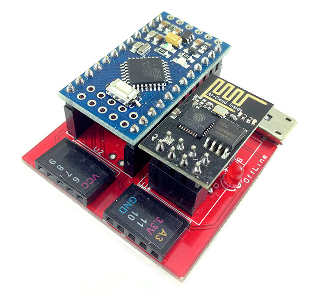
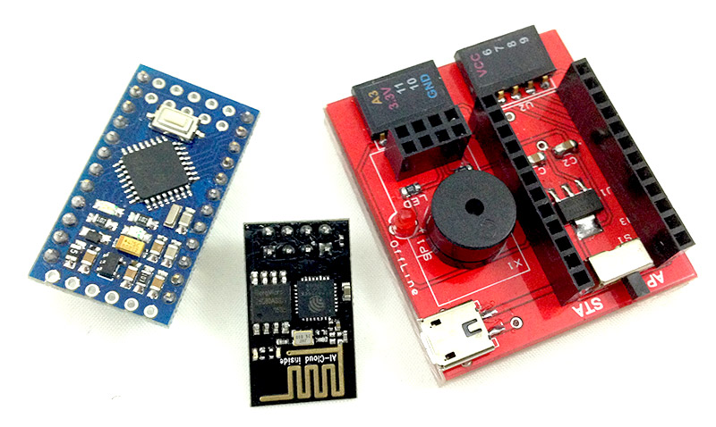

Webduino 馬克 1 號
經過千錘百鍊的電路設計，Webduino 馬克 1 號終於以一身紅的姿態出現，對於手邊已經有傳感器或電子零件的開發者，可以直接藉由馬克 1 號進行開發，透過 Webduino 開發板，便可以開始控制已支援的傳感器，感受透過 Web 技術串接 Arduino 的方便和美好。
售價：
新台幣 840 元整 ( 已含稅 )
點選「立刻購買」，將會前往 Webduino 露天賣場，貨運可以選擇「超商貨到付款」、「郵局包裹」、「7-11 取貨」模式，購買前請先 閱讀購買須知以及退換貨說明，歡迎政府機關、教育單位或公司行號採購，採購相關資訊請 來信 或來電 07-3388511 洽詢。
產品內容：
- 1. Webduino 基底電路板 ×1 ( mirco USB 電源輸入孔 )
- 2. Arduino Pro Mini ×1
- 3. Wifi 晶片模組 ×1
- 4. mirco USB 線 ×1
電源輸入範圍：
5~6V，1~2A
產品照片：
 
初次使用必看：
實作 Webduino 之前，最重要的就是進行初始化設定，初始化設定的目的在於讓 Webduino 開發板可以自動上網，請連結至初始化設定教學頁面，或觀賞教學影片，確保可以正常使用。
1. 馬克 1 號初始化設定教學：https://webduino.io/tutorials/info-02-setup.html
2. 馬克 1 號初始化教學影片：https://www.youtube.com/watch?v=cwzpAK_0f2I